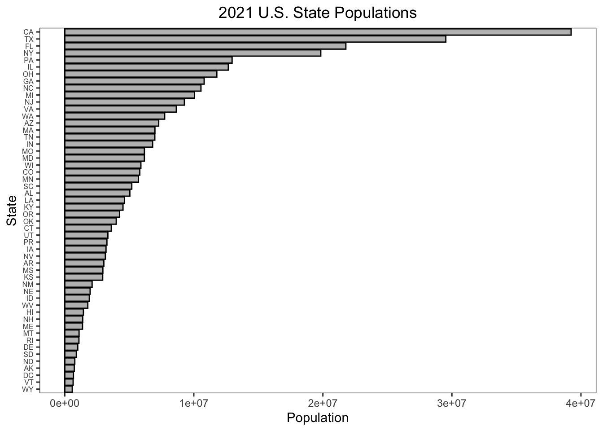
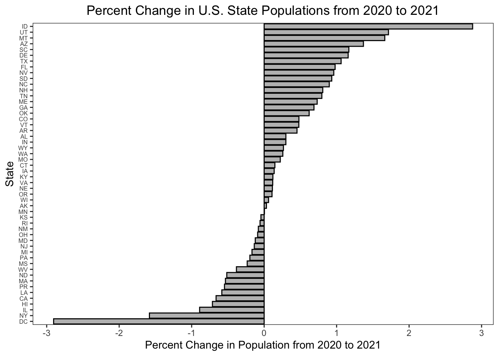
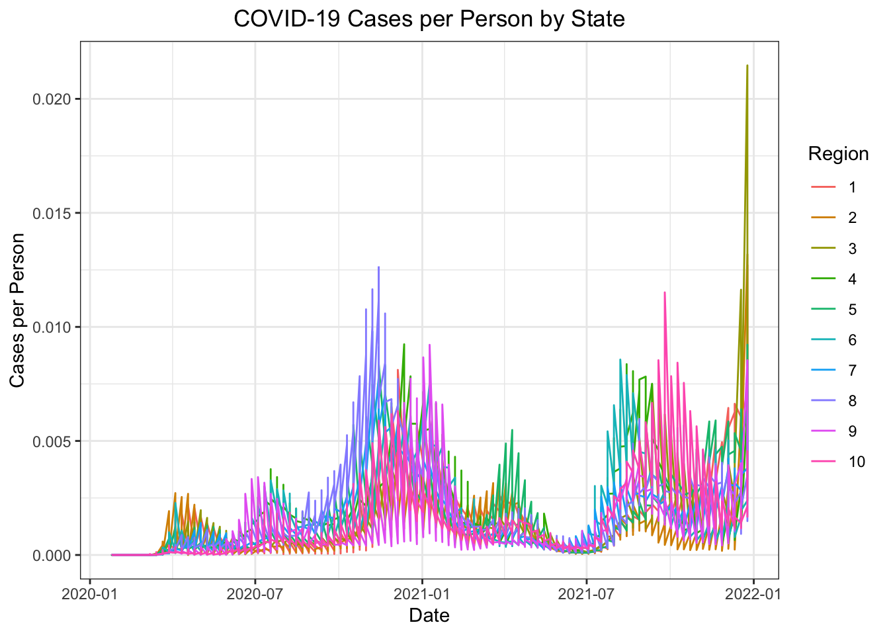
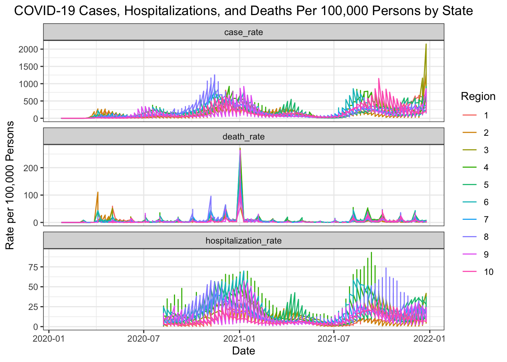
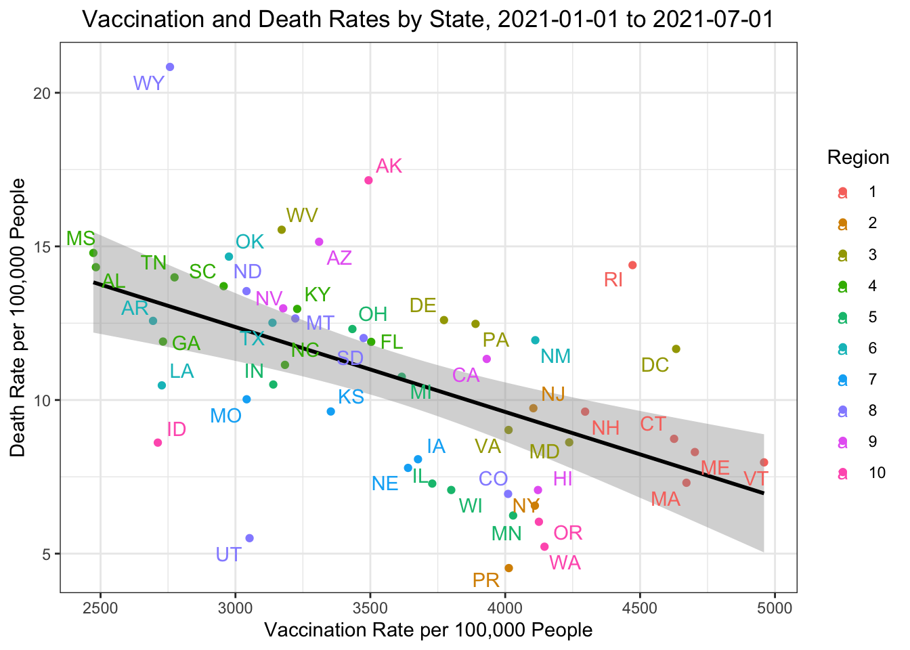
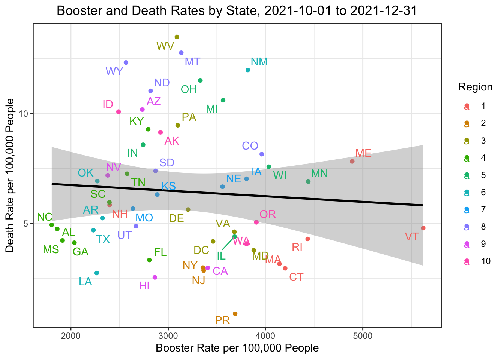

# Define census key variable as census_key
source("census_key.R")Problem Set 3
- Get an API key from the US Census at https://api.census.gov/data/key_signup.html. Save it an object called
census_key.
- Use an internet search to find information about the US Census APIs to obtain vintage population estimates. Define a variable called
apiwith the URL.
api <- "https://api.census.gov/data/2021/pep/population"- Read the documentation for the API and use the httr2 package to prepare a request that gives us 2020 and 2021 population estimates for each state. Save the request in a variable called
request, without performing it. Compare the request to the examples in the documentation to see if you are on the right track.
suppressMessages(library(httr2))
request <- request(api) |>
req_url_query(get = I("POP_2020,POP_2021,NAME"),
`for` = I("state:*"),
key = census_key)- Now perform the request and examine the data that is returned. Save the result to
request(overwrite it).
request <- req_perform(request)- We see the request returned data in JSON format. We can see the content with the function
req_body_json, but we want a data frame. Use the jsonlite package to convert the raw JSON data into a data frame. Save it inpopulation.
suppressMessages(library(jsonlite))
population <- request |>
resp_body_string() |>
fromJSON(flatten = TRUE)- Examine the table. Notice 1) it is not tidy, 2) the column types are not what we want, and 3) the first row is a header. Convert
populationto a tidy dataset. Remove the state ID column and change the name of the column with state names tostate_name. Add a column with state abbreviations calledstate. Make sure you assign the abbreviations for DC and PR correctly. Hint: Start by using the janitor package to make the first row the header.
suppressMessages(library(tidyverse))
suppressMessages(library(janitor))
population <- population |>
row_to_names(1) |>
as_tibble() |>
select(-state) |>
rename(state_name = NAME) |>
pivot_longer(-state_name, names_to = "year", values_to = "population") |>
mutate(year = str_remove(year, "POP_")) |>
mutate(across(-state_name, as.numeric)) |>
mutate(state = case_when(
state_name == "District of Columbia" ~ "DC",
state_name == "Puerto Rico" ~ "PR",
TRUE ~ state.abb[match(state_name, state.name)]
))- As a check, make a barplot of states’ 2021 populations
population |>
filter(year == 2021) |>
ggplot(aes(x = reorder(state, population), y = population)) +
geom_bar(stat = "identity", fill = "grey", color = "black") +
coord_flip() +
labs(title = "2021 U.S. State Populations",
x = "State",
y = "Population") +
theme_bw() +
theme(axis.text.y = element_text(size = 6),
panel.grid.major = element_blank(),
panel.grid.minor = element_blank()) +
theme(plot.title = element_text(hjust = 0.5))
- To practice
pivot_widermake a bar plot of percent change in population by state.
population |>
pivot_wider(names_from = year, values_from = population) |>
mutate(percent_change = ((`2021` - `2020`) / `2020`) * 100) |>
ggplot(aes(x = reorder(state, percent_change), y = percent_change)) +
geom_bar(stat = "identity", fill = "grey", color = "black") +
coord_flip() +
labs(title = "Percent Change in U.S. State Populations from 2020 to 2021",
x = "State",
y = "Percent Change in Population from 2020 to 2021") +
theme_bw() +
theme(axis.text.y = element_text(size = 6),
panel.grid.major = element_blank(),
panel.grid.minor = element_blank()) +
theme(plot.title = element_text(hjust = 0.5))
- Add the following region numbers to the data:
cdc_regions_list <- list(
"1" = c("Connecticut", "Maine", "Massachusetts", "New Hampshire", "Rhode Island", "Vermont"),
"2" = c("New Jersey", "New York", "Puerto Rico", "Virgin Islands"),
"3" = c("Delaware", "District of Columbia", "Maryland", "Pennsylvania", "Virginia", "West Virginia"),
"4" = c("Alabama", "Florida", "Georgia", "Kentucky", "Mississippi", "North Carolina", "South Carolina", "Tennessee"),
"5" = c("Illinois", "Indiana", "Michigan", "Minnesota", "Ohio", "Wisconsin"),
"6" = c("Arkansas", "Louisiana", "New Mexico", "Oklahoma", "Texas"),
"7" = c("Iowa", "Kansas", "Missouri", "Nebraska"),
"8" = c("Colorado", "Montana", "North Dakota", "South Dakota", "Utah", "Wyoming"),
"9" = c("Arizona", "California", "Hawaii", "Nevada", "American Samoa", "Commonwealth of the Northern Mariana Islands", "Federated States of Micronesia", "Guam", "Marshall Islands", "Republic of Palau"),
"10" = c("Alaska", "Idaho", "Oregon", "Washington"))
cdc_regions <- do.call(rbind, lapply(names(cdc_regions_list), function(region) {
data.frame(region = region, state_name = cdc_regions_list[[region]])
})) |>
mutate(region = factor(as.numeric(region)))
population <- population |>
left_join(cdc_regions, by = c("state_name"))- Go to https://data.cdc.gov/ and learn about the CDC API for COVID-19 data. Find an API that provides state level data from SARS-COV2 cases and store it in a data frame.
about_page <- "https://data.cdc.gov/Case-Surveillance/Weekly-United-States-COVID-19-Cases-and-Deaths-by-/pwn4-m3yp/about_data"
api <- "https://data.cdc.gov/resource/pwn4-m3yp.json"
cases_raw <- request(api) |>
req_url_query("$limit" = 100000) |>
req_perform() |>
resp_body_string() |>
fromJSON(flatten = TRUE)
head(cases_raw) date_updated state start_date end_date
1 2023-02-23T00:00:00.000 AZ 2023-02-16T00:00:00.000 2023-02-22T00:00:00.000
2 2022-12-22T00:00:00.000 LA 2022-12-15T00:00:00.000 2022-12-21T00:00:00.000
3 2023-02-23T00:00:00.000 GA 2023-02-16T00:00:00.000 2023-02-22T00:00:00.000
4 2023-03-30T00:00:00.000 LA 2023-03-23T00:00:00.000 2023-03-29T00:00:00.000
5 2023-02-02T00:00:00.000 LA 2023-01-26T00:00:00.000 2023-02-01T00:00:00.000
6 2023-03-23T00:00:00.000 LA 2023-03-16T00:00:00.000 2023-03-22T00:00:00.000
tot_cases new_cases tot_deaths new_deaths new_historic_cases
1 2434631.0 3716.0 33042.0 39.0 23150
2 1507707.0 4041.0 18345.0 21.0 21397
3 3061141.0 5298.0 42324.0 88.0 6800
4 1588259.0 2203.0 18858.0 23.0 5347
5 1548508.0 5725.0 18572.0 47.0 4507
6 1580709.0 1961.0 18835.0 35.0 2239
new_historic_deaths
1 0
2 0
3 0
4 0
5 0
6 0- Note that we obtained weekly data. Wrangle the table so that you keep only states for which you have population data. Keep the following variables: state, epidemiological week and year, and new cases (as numbers). Order by state, then chronologically. Hint: Use
as_date,epiweekandepiyearfunctions in lubridate package.
library(lubridate)
cases <- cases_raw |>
as_tibble() |>
filter(state %in% population$state) |>
mutate(start_date = ymd_hms(start_date)) |>
mutate(epi_week = epiweek(start_date),
epi_year = epiyear(start_date)) |>
select(state, epi_year, epi_week, new_cases) |>
filter(!is.na(state), !is.na(new_cases)) |>
mutate(new_cases = round(as.numeric(new_cases))) |>
group_by(state, epi_year, epi_week, .groups = "drop") |>
summarize(new_cases = sum(new_cases)) |>
ungroup () |>
select(-.groups) |>
arrange(state, epi_year, epi_week) |>
suppressMessages()
head(cases)# A tibble: 6 × 4
state epi_year epi_week new_cases
<chr> <dbl> <dbl> <dbl>
1 AK 2020 3 0
2 AK 2020 4 0
3 AK 2020 5 0
4 AK 2020 6 0
5 AK 2020 7 0
6 AK 2020 8 0- Now repeat the same exercise for hospitalizations. However, before you start, notice the code for extracting the data is the same as in the previous exercise except for the API URL. Write a function that takes an API URL and returns the data in a data frame.
get_cdc_data <- function(api){
request(api) |>
req_url_query("$limit" = 10000000) |>
req_perform() |>
resp_body_string() |>
fromJSON(flatten = TRUE)
}- Now use the function to get the raw hospital data. Examine the data once you have it to determine if it is daily or weekly.
about <- "https://healthdata.gov/dataset/United-States-COVID-19-Hospitalization-Metrics-by-/n2qh-gzpn/about_data"
api <- "https://data.cdc.gov/resource/39z2-9zu6.json"
hosp_raw <- get_cdc_data(api)- Collapse the data into weekly data and keep the same columns as in the cases dataset, except keep total weekly hospitalizations instead of cases. Remove weeks with less than 7 days reporting.
hosp <- hosp_raw |>
filter(jurisdiction %in% population$state) |>
mutate(collection_date = ymd_hms(collection_date)) |>
mutate(epi_week = epiweek(collection_date),
epi_year = epiyear(collection_date)) |>
mutate(state = jurisdiction) |>
mutate(new_hospitalizations = new_covid_19_hospital) |>
select(state, epi_year, epi_week, new_hospitalizations) |>
filter(!is.na(state), !is.na(new_hospitalizations)) |>
group_by(state, epi_year, epi_week) |> # group to remove weeks with fewer than 7 reports
filter(n() >= 7) |>
ungroup() |>
mutate(new_hospitalizations = as.numeric(new_hospitalizations)) |>
group_by(state, epi_year, epi_week, .groups = "drop") |>
summarize(new_hospitalizations = sum(new_hospitalizations)) |>
ungroup () |>
select(-.groups) |>
arrange(state, epi_year, epi_week) |>
suppressMessages()
head(hosp)# A tibble: 6 × 4
state epi_year epi_week new_hospitalizations
<chr> <dbl> <dbl> <dbl>
1 AK 2020 32 28
2 AK 2020 33 22
3 AK 2020 34 31
4 AK 2020 35 31
5 AK 2020 36 35
6 AK 2020 37 30- Repeat what you did in the previous two exercises for provisional COVID-19 deaths.
about <- "https://data.cdc.gov/NCHS/Provisional-COVID-19-Death-Counts-by-Week-Ending-D/r8kw-7aab/about_data"
api <- "https://data.cdc.gov/resource/r8kw-7aab.json"
deaths_raw <- get_cdc_data(api)
deaths <- deaths_raw |>
as_tibble() |>
mutate(state = case_when(
state == "District of Columbia" ~ "DC",
state == "Puerto Rico" ~ "PR",
TRUE ~ state.abb[match(state, state.name)]
)) |>
filter(state %in% population$state) |>
mutate(start_date = ymd_hms(start_date)) |>
mutate(epi_week = epiweek(start_date),
epi_year = epiyear(start_date)) |>
select(state, epi_year, epi_week, covid_19_deaths) |>
filter(!is.na(state), !is.na(covid_19_deaths)) |>
mutate(covid_19_deaths = as.numeric(covid_19_deaths)) |>
group_by(state, epi_year, epi_week, .groups = "drop") |>
summarize(covid_19_deaths = sum(covid_19_deaths)) |>
ungroup () |>
select(-.groups) |>
arrange(state, epi_year, epi_week) |>
suppressMessages()
head(deaths)# A tibble: 6 × 4
state epi_year epi_week covid_19_deaths
<chr> <dbl> <dbl> <dbl>
1 AK 2020 1 1782
2 AK 2020 2 0
3 AK 2020 3 0
4 AK 2020 4 0
5 AK 2020 5 0
6 AK 2020 6 0- Obtain vaccination data. Keep the variables
series_completeandboosteralong with state and date. Remember we will later want to join with the others.
about <- "https://catalog.data.gov/dataset/covid-19-vaccination-trends-in-the-united-statesnational-80d4f"
api <- "https://data.cdc.gov/resource/rh2h-3yt2.json"
vax_raw <- get_cdc_data(api)
vax <- vax_raw |>
as_tibble() |>
filter(location %in% population$state) |>
mutate(state = location) |>
mutate(date = ymd_hms(date)) |>
mutate(epi_week = epiweek(date),
epi_year = epiyear(date)) |>
select(state, epi_year, epi_week, administered_daily, series_complete_daily, booster_daily) |>
filter(!is.na(state)) |>
mutate(administered_daily = as.numeric(administered_daily),
series_complete_daily = as.numeric(series_complete_daily),
booster_daily = as.numeric(booster_daily)) |>
group_by(state, epi_year, epi_week, .groups = "drop") |>
summarize(administered_daily = sum(administered_daily),
series_complete_daily = sum(series_complete_daily),
booster_daily = sum(booster_daily)) |>
ungroup() |>
select(-.groups) |>
arrange(state, epi_year, epi_week) |>
suppressMessages()
head(vax)# A tibble: 6 × 6
state epi_year epi_week administered_daily series_complete_daily booster_daily
<chr> <dbl> <dbl> <dbl> <dbl> <dbl>
1 AK 2020 51 9610 46 0
2 AK 2020 52 17131 23 0
3 AK 2020 53 15928 45 0
4 AK 2021 1 35664 8282 0
5 AK 2021 2 65829 5164 0
6 AK 2021 3 62525 6551 0- Now we are ready to join the tables. We will only consider 2020 and 2021 as we don’t have population sizes for 2022 onwards. However, because we want to guarantee that all dates are included we will create a data frame with all possible weeks. We can use this:
all_dates <- data.frame(date = seq(make_date(2020, 1, 25), make_date(2021, 12, 31), by = "week")) |>
mutate(date = ceiling_date(date, unit = "week", week_start = 7) - days(1)) |>
mutate(epi_year = epiyear(date), epi_week = epiweek(date))
# dates_and_pop <- cross_join(population, all_dates)
# match dates to population
dates_and_pop <- bind_rows(
population |>
filter(year == 2020) |>
cross_join(all_dates |>
filter(epi_year == 2020)),
population |>
filter(year == 2021) |>
cross_join(all_dates |>
filter(epi_year == 2021))
)Use this to join all the tables in a way that preserves these dates. Call the final table dat.
dat <- reduce(list(dates_and_pop, cases, hosp, vax, deaths),
left_join,
by = c("state", "epi_year", "epi_week")
)
head(dat)# A tibble: 6 × 14
state_name year population state region date epi_year epi_week
<chr> <dbl> <dbl> <chr> <fct> <date> <dbl> <dbl>
1 Oklahoma 2020 3962031 OK 6 2020-01-25 2020 4
2 Oklahoma 2020 3962031 OK 6 2020-02-01 2020 5
3 Oklahoma 2020 3962031 OK 6 2020-02-08 2020 6
4 Oklahoma 2020 3962031 OK 6 2020-02-15 2020 7
5 Oklahoma 2020 3962031 OK 6 2020-02-22 2020 8
6 Oklahoma 2020 3962031 OK 6 2020-02-29 2020 9
# ℹ 6 more variables: new_cases <dbl>, new_hospitalizations <dbl>,
# administered_daily <dbl>, series_complete_daily <dbl>, booster_daily <dbl>,
# covid_19_deaths <dbl>- Plot a trend plot with cases per person for all states with color representing region.
dat |> mutate(cases_per_person = new_cases / population) |>
ggplot(aes(x = date, y = cases_per_person, color = region)) +
geom_line() +
labs(x = "Date",
y = "Cases per Person",
color = "Region",
title = "COVID-19 Cases per Person by State") +
theme_bw() +
theme(plot.title = element_text(hjust = 0.5))
- Repeat the above for hospitalizations and deaths. Use
pivot_longerandfacet_wrap. Plot rates per \(100,000\) people. Place the plots on top of each other.
dat |>
mutate(case_rate = new_cases / population * 100000,
hospitalization_rate = new_hospitalizations / population * 100000,
death_rate = covid_19_deaths / population * 100000) |>
pivot_longer(cols = c(case_rate, hospitalization_rate, death_rate),
names_to = "variable",
values_to = "rate_per_person") |>
ggplot(aes(x = date, y = rate_per_person, color = region)) +
geom_line() +
facet_wrap(~ variable, nrow = 3, scales = "free_y") +
labs(x = "Date",
y = "Rate per 100,000 Persons",
color = "Region",
title = "COVID-19 Cases, Hospitalizations, and Deaths Per 100,000 Persons by State") +
theme_bw() +
theme(plot.title = element_text(hjust = 0.5))
- For the period January 1 to July 1, 2021 compute the deaths per day per 100,000 people in each state as well as the vaccination rate (primary series) by September 1st. Plot these against each other.
library(ggrepel)
dat |>
filter(date >= ymd("2021-01-01") & date <= ymd("2021-07-01")) |>
mutate(vax_rate = series_complete_daily / population * 100000,
death_rate = covid_19_deaths / population * 100000) |>
group_by(state, region) |>
summarize(mean_vax_rate = mean(vax_rate, na.rm = TRUE),
mean_death_rate = mean(death_rate, na.rm = TRUE)) |>
suppressMessages() |>
ggplot(aes(x = mean_vax_rate, y = mean_death_rate)) +
geom_point(aes(color = region)) +
geom_smooth(formula = y ~ x, method = "lm", se = TRUE, color = "black") +
geom_text_repel(aes(label = state, color = region)) +
labs(x = "Vaccination Rate per 100,000 People",
y = "Death Rate per 100,000 People",
color = "Region",
title = "Vaccination and Death Rates by State, 2021-01-01 to 2021-07-01") +
theme_bw() +
theme(plot.title = element_text(hjust = 0.5))
- Repeat the exercise for the booster for October 1 to December 31, 2021.
dat |>
filter(date >= ymd("2021-10-01") & date <= ymd("2021-12-31")) |>
mutate(booster_rate = booster_daily / population * 100000,
death_rate = covid_19_deaths / population * 100000) |>
group_by(state, region) |>
summarize(mean_booster_rate = mean(booster_rate, na.rm = TRUE),
mean_death_rate = mean(death_rate, na.rm = TRUE)) |>
suppressMessages() |>
ggplot(aes(x = mean_booster_rate, y = mean_death_rate)) +
geom_point(aes(color = region)) +
geom_smooth(formula = y ~ x, method = "lm", se = TRUE, color = "black") +
geom_text_repel(aes(label = state, color = region)) +
labs(x = "Booster Rate per 100,000 People",
y = "Death Rate per 100,000 People",
color = "Region",
title = "Booster and Death Rates by State, 2021-10-01 to 2021-12-31") +
theme_bw() +
theme(plot.title = element_text(hjust = 0.5))